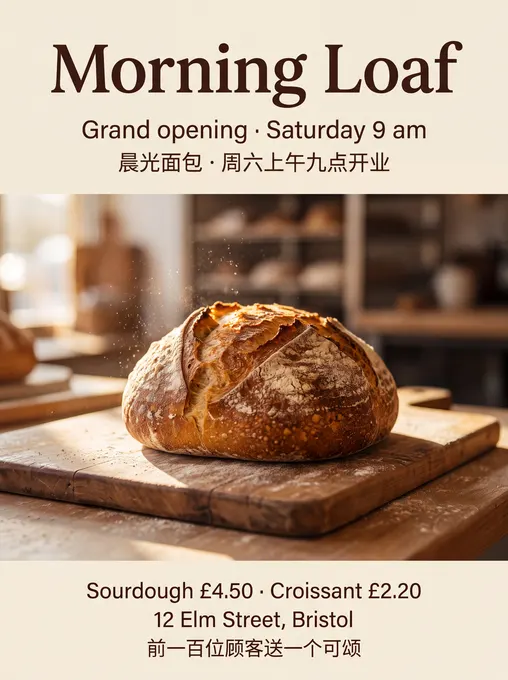
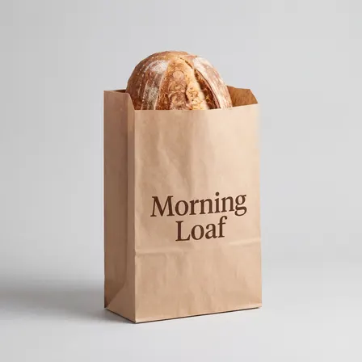
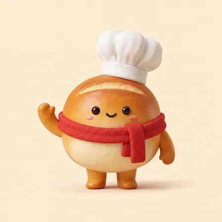
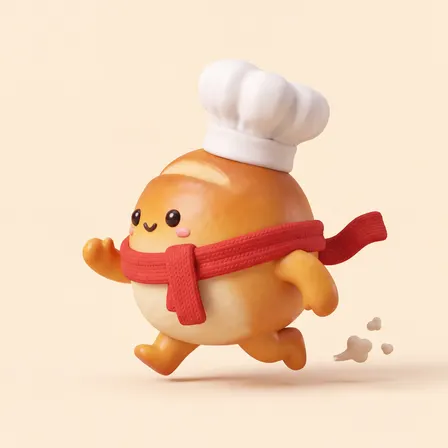
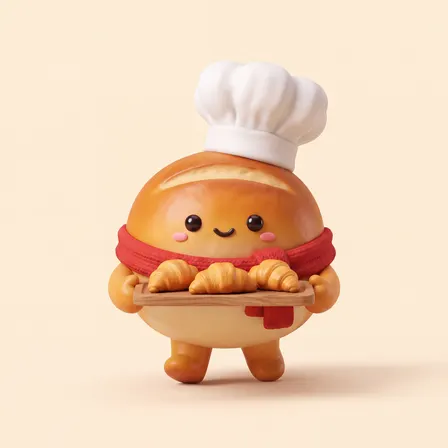
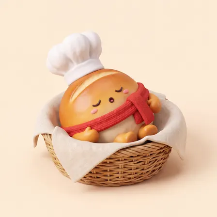

thangphistudent/nano-banana-2-promptor-skill: image test, 2026-11-08
The same brief for every skill: a 3:4 poster for a made-up bakery with six exact lines of English and Chinese text, a square photo of a kraft-paper bag printed with the shop's name, and four square pictures of one mascot in four poses. Claude Code (Claude Opus 5.5) made them with the skill in a throwaway sandbox; every image call went to the newest model of the family the skill asked for (GPT Image 2.6, Nano Banana 2.1 or FLUX 3). 5.9 minutes; 8 image calls ($0.144), drawn by gemini-nano-banana-2.1-ext. All results · The brief · How it is scored
Result
Followed the brief
The pictures












The text, read letter by letter
Read by OCR (macOS Vision, five passes); a line OCR could not find as written was looked at by hand.
| Asked for | Written |
|---|---|
| Morning Loaf | right |
| Grand opening · Saturday 9 am | right |
| 晨光面包 · 周六上午九点开业 | right |
| Sourdough £4.50 · Croissant £2.20 | right |
| 12 Elm Street, Bristol | right |
| 前一百位顾客送一个可颂 | right |
| Morning Loaf (on the bag) | right |
The mascots (judged by a vision model)
| Same character in all four (1-5) | 5 |
|---|---|
| Poses as asked (of 4) | 4 |
| Chef's hat and red scarf in all four | yes |
| Text on them | no |
The judge's note: All four clearly show the same round bread character with matching colors, face, white chef hat, and red scarf.
How it went (the session's closing message)
I made all six pictures and checked each one by eye. The installed skill is **promptor**. It only writes prompts: for each picture it produces a JSON file with a written-out prompt, and it doesn't call any image service itself. It's built for Nano Banana 2, so I sent its prompts, with the aspect ratio and 4K size it set, to `gemini-3.1-flash-image-preview` through the Gemini API. The six prompt files are in `~/work/prompts/` and the small script that sends them is `~/work/scripts/gen.py`. - **`poster.png`** (3:4): a sourdough loaf on a wooden board in morning window light. It shows exactly the six lines, spelled correctly with the `·` and `£` signs and the Chinese characters, and no other text. - **`product.png`** (1:1): a kraft-paper bag standing on a light-grey background with a sourdough loaf at the top. "Morning Loaf" is printed in dark brown and there is no other text. - **`mascot-1.png` to `mascot-4.png`** (1:1): Bun in a soft 3D clay style, with the same round crust body, white chef's hat, red knitted scarf, dot eyes and pink cheeks in all four. Bun waves from the front, runs left in side view, carries a tray of three croissants, and sleeps in a wicker basket. None of them has any text. Two things I added beyond the skill: - **Matching the mascot:** for pictures 2 to 4, I also passed `mascot-1.png` to the model as a reference so Bun would come out the same each time. The skill doesn't cover this, but the brief asks for the same character in all four. - **Fixing the sleeping picture:** the first two tries at `mascot-4.png` drew the mouth as a third closed-eye curve, so the face looked like it had three eyes. I added more detail to that one prompt's description of the face, as the skill advises when a result needs refining. The third try is correct and is the one saved. The skill's rules didn't conflict with the brief, so everything in it was met. DELIVERABLE: ~/work/output/